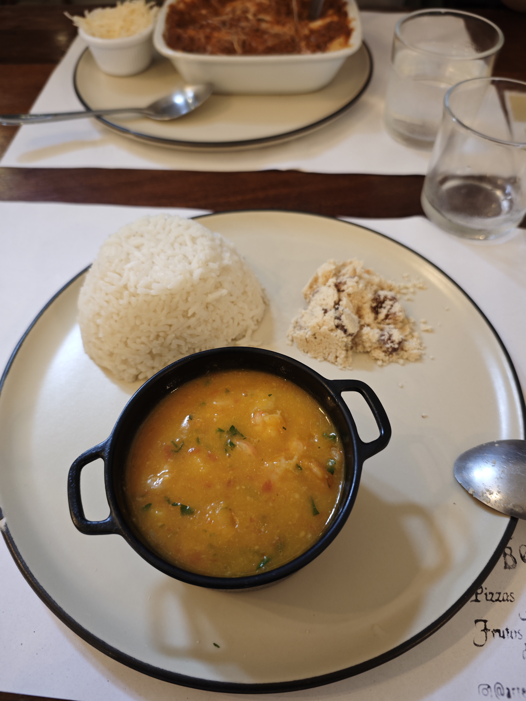
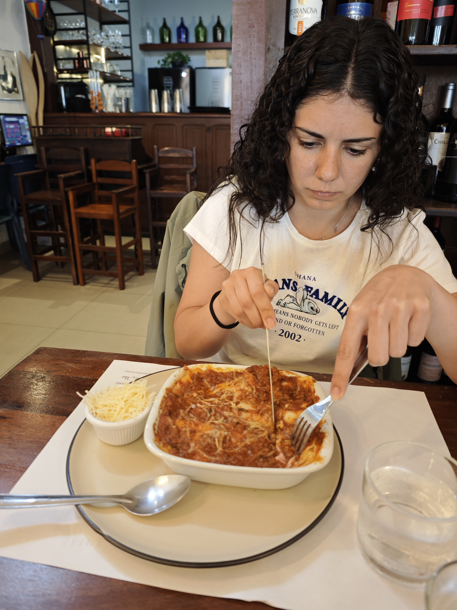
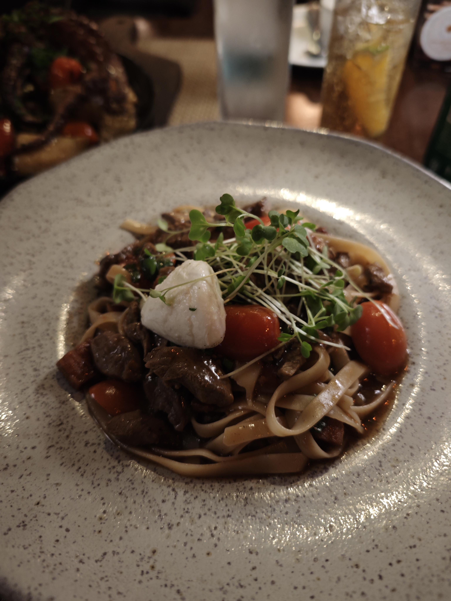
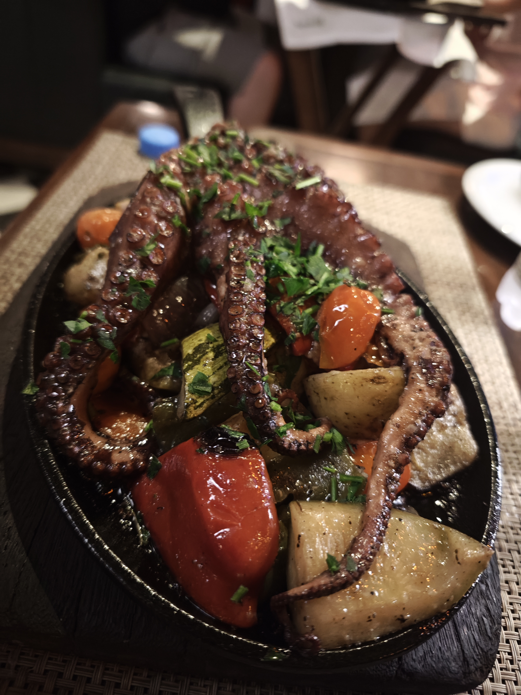

Este día nos recogían para salir hacia Paraty. Tuvimos un viaje de 4 horas o más porque, una vez más, éramos los primeros en ser recogidos. Mientras íbamos, decidí buscar en Google información sobre Paraty. Lo que encontré me asustó un poco: decía que era una de las ciudades más peligrosas. Nos cagamos un poco de miedo, para ser sinceros.
🚗 Camino a Paraty: 4+ Horas de Aventura
😨 El Susto de Paraty
La búsqueda en Google sobre la seguridad de Paraty fue probablemente una decisión poco acertada. Pero a medida que llegamos y exploramos, nos dimos cuenta de que esos peligros eran mayormente exagerados o corresponden a zonas específicas, no al centro histórico donde nos alojábamos.
🏨 La Posada do Sandi: Un Hotel Único
Cuando nos dejaron en el hotel, llevamos las maletas por un camino super pedregoso. Un ayudante del hotel se las recogió con una carretilla manual de madera super vieja. Fue muy único, un momento que resumía la rusticidad de Paraty.
El hotel es la Posada do Sandi, ubicado en el centro histórico. En la recepción tampoco nos atendieron en inglés, solo portuñol muy básico. La habitación era muy chula: tenía 2 camas individuales y una de matrimonio. El baño es uno de los mejores que hemos visto en el viaje, con una ducha con manguera extensible que demuestra el estándar de comodidad que tienen en este lugar.
El inodoro es japonés, de los que tienen chorrito para limpiar. Fue una sorpresa agradable. Parece que en Brasil tienen menos costumbre de estos lujos, pero cuando los tienen, los tienen bien.
🏨 Posada do Sandi
Ubicación: Centro histórico de Paraty
Habitación: 2 camas individuales + 1 de matrimonio
Baño: De los mejores del viaje (ducha con manguera extensible)
Inodoro: Japonés con chorrito
Acceso: Camino super pedregoso
🍽️ Primeras Comidas: Aciertos y Desaciertos
Buscamos un sitio para comer que había allí al lado con buena puntuación. Yo pedí un babao de camarones con arroz y algo más raro que parecía arena de playa con algo dulce. No estaba muy bueno. María se pidió una lasaña. Tardaron bastante en atendernos y creemos que fue porque se les quemó una lasaña.
Después estuvimos dando una vuelta por el pueblo viendo las tiendas. Pedimos un helado que nos habían regalado con el hotel y luego pedimos un açaí, pero al final no tenían. Hubo problemas con el café porque nos lo hicieron en un vaso muy pequeño, y el idioma fue una barrera real para entendernos hasta que vino una chica que sí hablaba español. Nos devolvieron el dinero del açaí.
🗣️ Las Barreras del Idioma en Paraty
Paraty, siendo un pueblo pequeño y menos turístico que Rio, tiene muy poco personal que hable idiomas extranjeros. El portuguesa es la única opción, y eso crea momentos de frustración y confusión, pero también de humor cuando logras comunicarte con gestos y palabras inventadas.

🍤 Babao de camarones con arroz
🍝 Lasaña🐙 Cena: Pulpo a la Brasa
Después de explorar el pueblo, fuimos a cenar a un restaurante que también tenía muy buena puntuación cerca del hotel y que hacían pulpo a la brasa. Nos pedimos eso y unos spaguetis con carne. Estuvo muy bien, era un restaurante con música ambiente que hacía la experiencia muy agradable.
Después nos fuimos a leer en las zonas comunes, nos sentamos en unos sofas de la posada. Fue muy guay que en un momento empezamos a escuchar unos ruidos muy fuertes entre las plantas. De repente se asomó como un tipo de comadreja, súper bonita. Era un animal nocturno que el hotel denominaba como parte de su fauna local. Luego nos fuimos cuando empezó a chispear un poco más y nos dormimos.
🐙 Encuentro Nocturno
El encuentro con la comadreja fue inesperado y mágico. Estos momentos de conexión con la fauna local, donde simplemente aparece un animal silvestre en tu entorno, es lo que hace que un viaje sea realmente memorable. No fue peligroso, simplemente fue un recordatorio de que estábamos en la naturaleza.
🐙 Cena de Pulpo
Plato Principal: Pulpo a la brasa (excelente)
Acompañamiento: Spaguetis con carne
Ambiente: Música en vivo/ambiente
Sorpresa nocturna: Encuentro con fauna local

🍝 Tallarines con carne
🐙 Pulpo a la brasa
"Paraty no es solo un pueblo histórico. Es un recordatorio de que en los viajes hay espacio para lo
inesperado, para los animales silvestres que aparecen en la noche, para los caminos de piedra, para los
hoteles con baños únicos, para los idiomas que no entiendes pero que, de alguna manera, logras
atravesar." 🏘️🐙